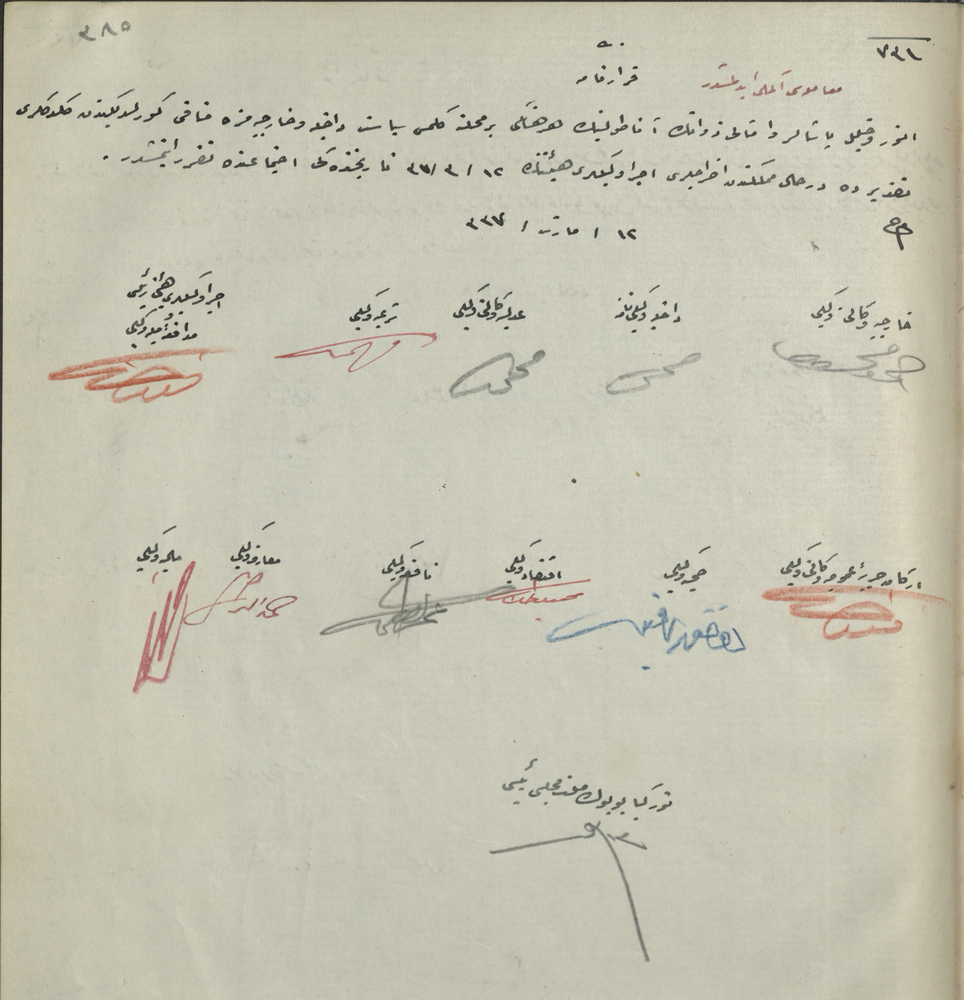

|
 |
KararnameMuamelesi İkmal EdilmiştirEnver ve Halil Paşaların ve ahalisi zevatın Anadolu'nun herhangi bir mahalline gelmesi siyaseti dahiliye ve hariciyemize münafi görüldüğünden geldikleri takdirde derhal memleketten ihraçları İcra Vekilleri heyetinin 12/3/37 tarihindeki içtimaında takarrür etmiştir. 12/Mart/337 Hariciye Vekaleti Vekili Ahmet MuhtarDahiliye Vekaleti Namına MehmetAdliye Vekaleti Vekili MehmetŞeriye Vekili Fehmiİcra Vekilleri Heyeti Reisi Müdafaai Milliye Vekili FevziErkanı Harbiyeyi Umumiye Vekaleti Vekili İsmetSıhhıye Vekili Dr.Refikİktisat Vekili Mahmut CelalNafia Vekili LütfiTürkiye Büyük Millet Meclisi Reisi Mustafa Kemal |